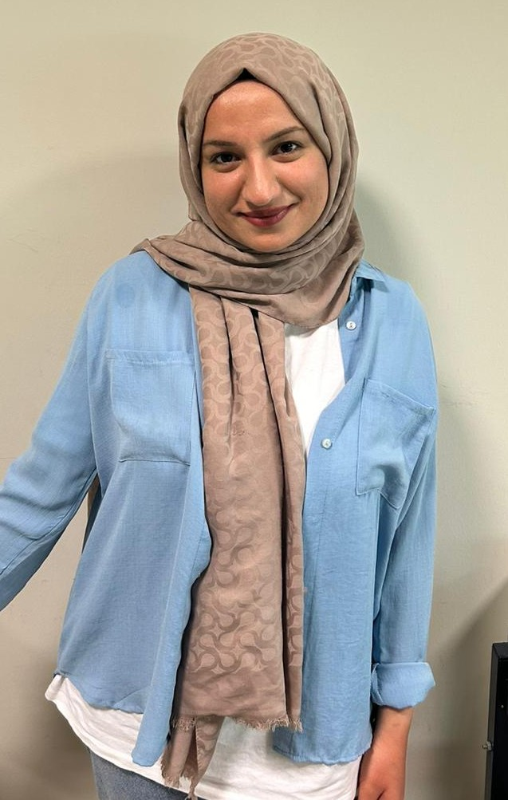

Hakkımda
Tanışma
Merhaba, ben Ebru Kaçmaz. 25 yaşındayım. Eskişehirliyim. Eskişehir Osmangazi Üniversitesi Özel Eğitim ve Sosyal Bilgiler öğretmenliği çift anadal programında eğitim görmekte olan bir öğretmen adayıyım. Eğitim yolculuğumda her bireyin öğrenme hakkına ve potansiyeline olan inancım, akademik ve mesleki kimliğimin temel taşını oluşturmaktadır.
Öğretim Felsefem
Öğretmenlik mesleğini yalnızca bilgi aktarımı olarak değil, bireylerin toplumsal yaşama etkin katılımını sağlayan bütüncül bir rehberlik süreci olarak değerlendirmekteyim. Kapsayıcı eğitim felsefem, sınıf ortamında her öğrencinin bireysel farklılıklarının bir zenginlik kaynağı olarak kabul edilmesi gerektiği ilkesine dayanmaktadır.
Farklı öğrenme stillerine ve ihtiyaçlarına yanıt verebilen esnek öğretim ortamları oluşturmayı hedeflemekteyim. Bu yaklaşım, özel gereksinimli öğrencilerin de akranlarıyla eşit fırsatlara sahip olmasını güvence altına almaktadır.
Eğitimde Teknoloji Kullanımı
Teknolojinin eğitimdeki rolünü, öğrenme engellerini ortadan kaldıran ve erişilebilirliği artıran güçlü bir araç olarak görmekteyim. Özellikle özel eğitim alanında, yardımcı teknolojiler ve dijital materyaller, öğrencilerin bağımsız öğrenme becerilerini geliştirmede kritik bir işlev üstlenmektedir.
Etkileşimli sunumlar, eğitsel videolar ve dijital değerlendirme araçları gibi çeşitli teknolojik uygulamaları, öğrenme sürecini zenginleştirmek ve bireyselleştirmek amacıyla kullanmaktayım. Teknoloji, doğru pedagojik yaklaşımla birleştirildiğinde, kapsayıcı bir sınıf ortamı oluşturmanın en etkili yollarından biridir.
İletişim
E-posta
ebrukacmaz784@gmail.com
Üniversite
Eskişehir Osmangazi Üniversitesi Eğitim Fakültesi

Ebru Kaçmaz
Öğretmen Adayı
Özel Eğitim & Sosyal Bilgiler Öğretmenliği